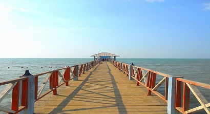

Pantai Alam Indah (disingkat PAI) adalah objek wisata pantai yang berlokasi di Kota Tegal, Jawa Tengah. Tempat rekreasi ini dikelola oleh Pemerintah Kota Tegal melalui Dinas Pemuda Olahraga Budaya dan Pariwisata. Dengan panjang sekitar 500 meter, mulai dari area Pelabuhan Tegal sampai dengan Universitas Pancasakti, Pantai Alam Indah menawarkan keindahan Laut Jawa yang tenang,
